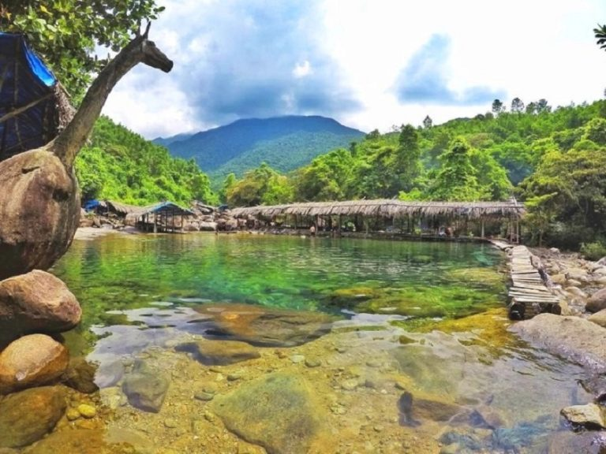

Trang chủ / Địa điểm
Khám phá các điểm đến ở Huế
Từ di tích lịch sử, danh thắng thiên nhiên đến những vùng đất bình yên, Huế mang đến nhiều trải nghiệm đáng nhớ.
Đại Nội Huế
Đại Nội là nơi tìm hiểu về không gian cung đình của triều Nguyễn. Những cổng thành, mái ngói và sân điện tạo nên một hành trình khám phá kiến trúc, lịch sử của kinh đô xưa.
Bước qua Ngọ Môn, bạn có thể dành thời gian quan sát những chi tiết trang trí và cảm nhận sự trang nghiêm của các công trình trong Hoàng thành.
Vị trí
Ngọ Môn,
trung tâm Huế
Giờ mở cửa
07:00 – 17:00Tham khảo, theo mùa
Giá vé
200.000 VNĐNgười lớn, tham khảo
Điểm nổi bật
- Kiến trúc cung đình độc đáo
- Không gian lịch sử trang nghiêm
- Nhiều công trình có giá trị
Chùa Thiên Mụ
Nằm trên đồi Hà Khê bên bờ sông Hương, Chùa Thiên Mụ gắn liền với hình ảnh tháp Phước Duyên bảy tầng. Ngôi chùa là điểm dừng để cảm nhận một Huế thanh bình, trầm mặc.
Từ khu vực phía trước chùa, cảnh sông nước mở ra giữa những hàng cây xanh. Không gian phù hợp với một buổi dạo bước chậm rãi và tìm hiểu văn hóa Phật giáo ở Huế.
Vị trí
Đồi Hà Khê,
đường Kim Long
Giờ mở cửa
Theo lịch nhà chùaNên ghé ban ngày
Giá vé
Miễn phíVào tham quan
Điểm nổi bật
- Tháp Phước Duyên bảy tầng
- Khuôn viên cổ kính, thanh tịnh
- Khung cảnh sông Hương thơ mộng
Sông Hương
Sông Hương chảy qua thành phố, kết nối những bến nước, cây cầu và không gian di sản. Vẻ đẹp của dòng sông thay đổi theo ánh sáng, từ buổi sáng yên ả đến sắc trời lúc hoàng hôn.
Một buổi đi bộ ven sông là cách đơn giản để cảm nhận nhịp sống Huế. Khu vực cầu Trường Tiền là điểm dừng quen thuộc để ngắm cảnh, chụp ảnh và nhìn thành phố lên đèn.
Vị trí
Trung tâm Huế,
cầu Trường Tiền
Giờ mở cửa
Không có giờ chungTùy khu vực ven sông
Giá vé
Miễn phí dạo bộThuyền, dịch vụ tính riêng
Điểm nổi bật
- Cầu Trường Tiền bên sông
- Công viên và đường đi bộ
- Cảnh hoàng hôn, thành phố lên đèn
Biển Lăng Cô
Lăng Cô đem đến một sắc thái khác của Huế với bãi cát dài, mặt biển xanh và những dãy núi phía xa. Cảnh quan thoáng rộng phù hợp cho chuyến đi tìm về thiên nhiên và không khí biển.
Bạn có thể dạo trên bờ cát, ngắm cảnh từ cung đường ven biển hoặc kết hợp khám phá đầm Lập An gần đó. Vẻ đẹp của Lăng Cô nằm ở sự hòa hợp giữa núi rừng và biển cả.
Vị trí
Khu vực Lăng Cô,
phía nam Huế
Giờ mở cửa
Tùy khu vựcNên khám phá ban ngày
Giá vé
Tùy khu vựcDịch vụ tính riêng
Điểm nổi bật
- Bãi cát dài, biển xanh
- Núi và làng chài ven biển
- Gần đầm Lập An, đèo Hải Vân

Suối Voi
Suối Voi là điểm khám phá thiên nhiên với làn nước trong, những tảng đá lớn và bóng cây xanh. Tên gọi của suối gắn với tảng đá có hình dáng giống một chú voi.
Không gian núi rừng đem lại cảm giác thư thái, phù hợp cho một buổi nghỉ chân và ngắm cảnh. Khi di chuyển gần suối, hãy chú ý mặt đá trơn và tuân thủ hướng dẫn tại khu vực tham quan.
Vị trí
Khu vực Lộc Tiến,
phía nam Huế
Giờ mở cửa
Cần xác nhậnLiên hệ trước khi đến
Giá vé
Cần xác nhậnTheo đơn vị quản lý
Điểm nổi bật
- Tảng đá hình chú voi
- Dòng suối và các hồ nhỏ
- Không gian núi rừng xanh mát